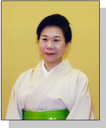
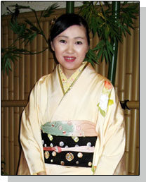
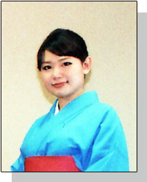

門下生に筑紫会の舞踊について聞いてみました。
体を動かした後は、気分も軽くなりリフレッシュできます！
自分で着物が着れたらと着付け教室を捜し見つけたのが筑紫先生の教室でした。 それが日本舞踊西崎流との出会いでした。
西崎流はテンポが速く、手や足の使い、又、振りなど日舞にはない斬新なものが多く、とてもリズミカルで華やかです。 お稽古場ではそんなテンポの良い西崎流はもちろんの事、テンポのゆっくりな古典や聞きなれた民謡など沢山の曲をお稽古できます。 お稽古で音に合わせて体を動かした後は、気分も軽くなりリフレッシュできます。
日本舞踊も着物も日本の伝統文化です。 身近で日本の文化を楽しみながら体験できるのはスゴイ事だと感じています。 今は住まいが遠くなり、お稽古も以前の様にゆきませんが、少しでも長く続けたらと思っています。 |
 |
先輩方の踊りに一目惚れしてしまいました！
私は西崎流に入門の折、稽古場に見学に行き、先生方や先輩方の踊りを拝見して一目惚れしてしまいました。西崎流の踊りは、洋舞にも似たテンポ感があり、とても難しいのですが、先生方や先輩方のビシッと決まったモダン舞踊は、ほんとうにすばらしくて圧巻です。
普段は、おさらい会にむけて１人で踊る曲を１曲と、ペアーで踊る曲を１曲を半年かけてじっくり稽古しています。稽古では伝統的な古典舞踊のゆっくり した踊りから、西崎流独特のキレのある早いテンポの踊りまで色々な踊りが習えます。着物の着方や、踊り以外のことも沢山学べます。
私が西崎流に入門したのは、「生活に楽しい目的を見つけてみませんか！」という張り紙を見つけた事がきっかけでした。それは、学生の部活動のような やり甲斐のあるものを求めていた私にとって、とても魅力的なメッセージでした。西崎流の踊りに出会えて、すばらしいライフワークができて、ほんとうに良 かったと思っています。踊りをはじめて１０年が経ち、名取教授免許を頂きましたが、まだまだ表現できないことやわからないことがたくさんあります。日本舞 踊は、長く続ければ続けるほど味がでてくる踊りだと思います。 いつか先輩方のように素敵な踊りが踊れるようになれるように頑張りたいと思います。
皆さんも是非ご一緒に日本舞踊を楽しんでみませんか！
|
 |
月2回のお稽古でも1年に3～4曲は踊れるようになります！
私は現在、月に２回、会社帰りにお稽古に通っています。 頻繁にお稽古ができればもっと上手に、もっとたくさん踊れるようになるのにという気持ちもありますが、今のペースでも１年間に３～４曲は新しい曲に挑戦できます。 踊っている最中は踊りのことだけを考えることができ、仕事で嫌なことがあった時でも、お稽古の後には気分爽快です。 日頃の運動不足から解放されることも、心身のリフレッシュになっています。
日本舞踊を習おうと決めたのは大学生の頃でした。 当時の私は日本舞踊に関しても、どういう教室を選べばいいのかということも、全く知識がない状態でした。 お稽古場が駅から近く、お稽古の曜日や時間を固定しなくてもよいということだったので、ホームページから見学を申し込み、その場で入門を決めました。 お月謝なども当時のアルバイト代で十分だと思い深く考えていなかったので、他のお教室なら日本舞踊のような習い事はとてもお金がかかるらしいと知ったのはずっと後になってからでした。 無知とは本当に恐ろしいものですが、幸運にも良いお教室に巡り合えたので今まで続けられています。
浴衣を短時間で着られるようになったり、街中やテレビ・映画で自分が踊ったことのある曲が聞こえてきたり、お稽古以外でも楽しいことがいっぱいです。
長く続けてさらに楽しみたいです。 |
 |